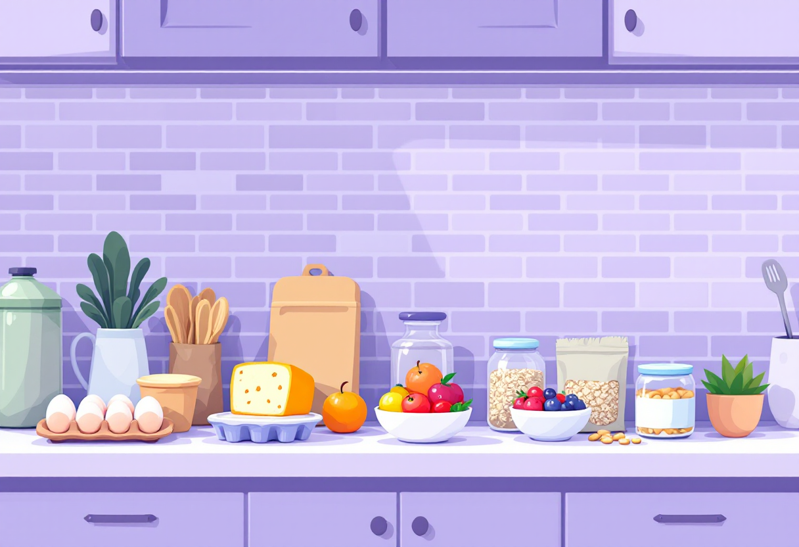
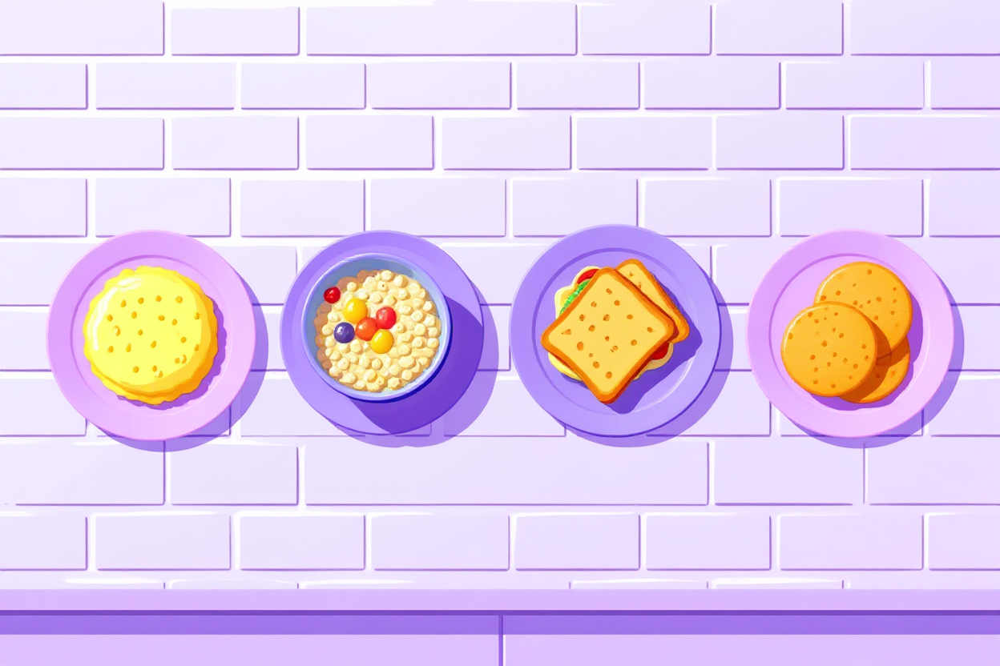
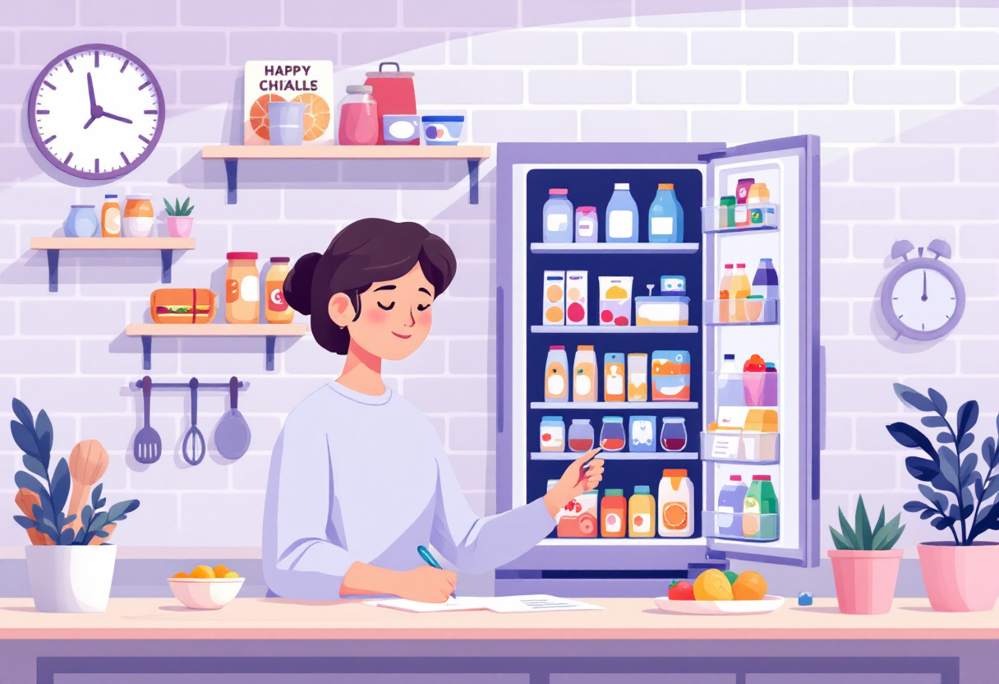
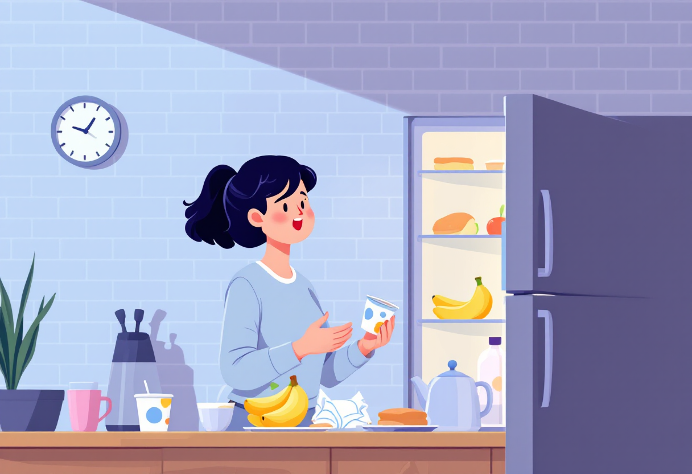

Сніданки вдома
Прості та швидкі ідеї для сніданку, які не потребують кулінарного досвіду.

Чому сніданок важливий
Сніданок запускає обмін речовин і дає енергію на першу половину дня. Пропускати його — значить погіршувати концентрацію та настрій.
- Їж сніданок протягом 1–2 годин після пробудження.
- Оптимальний склад: білки + складні вуглеводи + трохи жирів.
- Навіть 5-хвилинний сніданок краще, ніж жодного.

5 ідей для швидкого сніданку
Не потрібно готувати складні страви. Ось варіанти, які реально робити щодня:
- Вівсянка: залий окропом, додай банан або мед — готово за 5 хвилин.
- Яйця: яєчня або варені яйця — класика, що ніколи не підводить.
- Бутерброд: цільнозерновий хліб + авокадо або сир + помідор.
- Йогурт з мюслі: додай ягоди або фрукти — швидко і смачно.
- Смузі: банан + молоко + ложка арахісового масла — поживно і швидко.

Підготовка з вечора
Якщо вранці немає часу — готуй частково ввечері. Це економить до 15 хвилин зранку.
- Постав вівсянку у термос із водою на ніч.
- Заздалегідь наріж фрукти та постав у холодильник.
- Зроби overnight oats: вівсянка + йогурт + ягоди у банці.
- Постав каву на таймер, якщо є кавоварка з такою функцією.

Що тримати вдома для сніданків
Добре укомплектований холодильник — основа регулярних сніданків. Ось базовий список:
- Яйця, молоко або рослинне молоко.
- Вівсяні пластівці, мюслі або хліб.
- Банани, яблука або будь-які сезонні фрукти.
- Йогурт, сир або творог.
- Олія, мед, арахісове масло — для різноманіття.